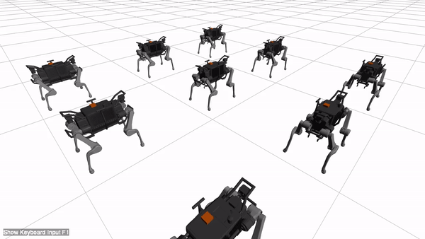

RaiSim is a rigid body simulator developed by researchers at RSL, ETH Zurich (Jemin Hwangbo and Dongho Kang). RaiSim features efficient recursive algorithms for articulated systems as well as the new novel contact solver described in [1]. The goal of RaiSim project is to provide simulation for data-driven robotics and animation research. Since the robotics community needs quality data that reflects the reality, RaiSim is designed for uncompromising accuracy. It is also designed to be nearly tuning-free to ease the pain of manual parameter tuning. All the systems presented here are simulated with the default setup. RaiSim is currently unreleased and only the researchers at RSL, ETH Zurich have an access.